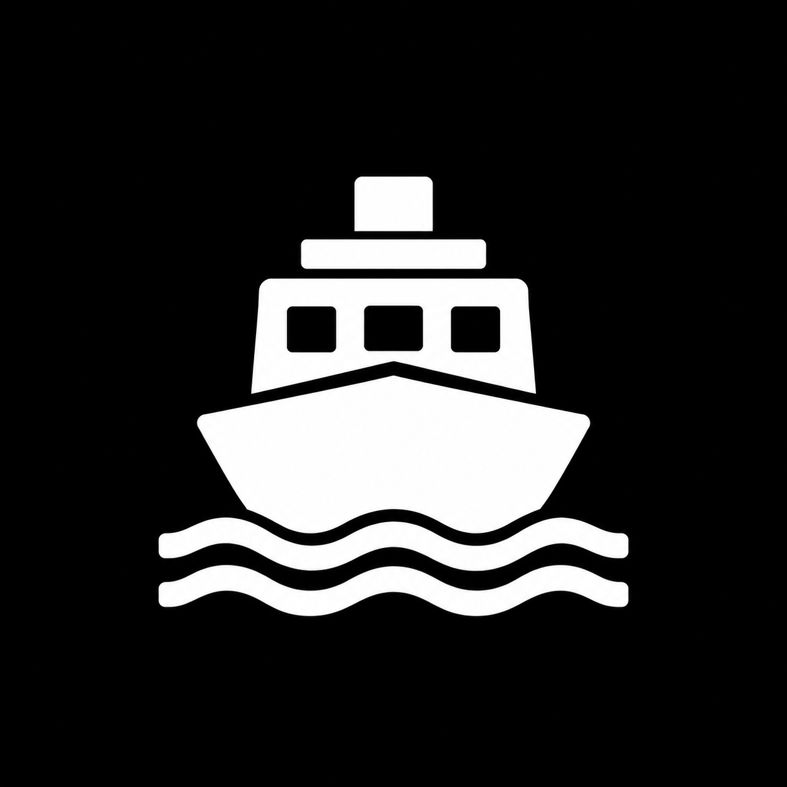

Map information and legends
Andros Island Web Map
About
This interactive web map presents geographic, environmental and thematic information for Andros Island, Greece. It includes accessibility features to support different ways of accessing and interacting with the map, including keyboard navigation, screen- reader information, and text-based alternatives.
The graphical user interface uses cream and beige panels, dark green headings, and simple boxed controls. It follows a two-column layout:
- Left sidebar: A scrollable information panel with a beige title bar and the following sections: Andros Island Web Map, Andros Map 1 to 150K scale: Legend & Text Alternative, 3. Chora Map 1 to 5K: Legend & Text Alternative, Land-use Map: Legend & Text Alternative, Information about Andros Island and Data Sources.
- Map area: It covers most of the screen and includes several elements for map controls and supporting information.
This web map application provides the following:
- Andros Map - 1 to 150K scale: an island-wide representation depicting settlements, coastline, road network and the neighboring island of Tinos.
- Chora Map 1 to 5K scale: a large-scale representation of Chora including roads, waterways and points of interest.
- Land use layer: portrays the main land uses on the island.
Explore the map
The map can be navigated with a mouse using the zoom buttons that appear at the upper left.
Alternatively, with the keyboard, use the arrow keys to pan and the + and - keys to zoom.
A Layers button sits at the upper right for choosing basemaps and thematic overlays. The Basemap list include OpenStreetMap, Light OpenStreetMap, Esri World Gray Canvas and Esri World Imagery.
The layers list include Andros Map 1:150,000, Chora Map 1:5,000, Land Uses and Annotations.
Use the Layers control to switch between basemaps and thematic layers and explore the available information at different scales. An index map appears at the lower right.
The geographical coordinates of the cursor appear above the index map on a white background. A scale bar appears at the lower left on a white background.
Andros Map 1 to 150K scale: Legend & Text Alternative
| Chora | Settlement | ||
| District road | Village road | ||
| Agricultural road | Coastline | ||
| Forest | Tinos island |
Description
This map provides an overview of Andros Island and its main geographical features. It displays the coastline, selected settlements and the Chora, the island's main town, the road network, distinguishing between district, village and agricultural. Forest areas and the neighbouring island of Tinos are also portrayed. The map helps users understand the general geographical structure of Andros and the distribution of its main settlements and transport connections.
The following symbols appear on the map and the legend.
Black-filled circle with a white ring and dark outer outline for the Chora, the island’s main town.
Hollow circle with a dark outline for a Settlement.
Thick red line with a dark outline the District road.
Thin orange line for the Village road.
Dashed gray line for Agricultural road.
Thin blue line for the Coastline.
Light-green for the Forest.
The road network and villages are unevenly distributed across Andros. The main district roads are concentrated in the central and southern parts, forming a connected route system between the western side, Chora on the eastern coast, and the southeastern interior. The north is served mainly by village and agricultural roads.
Village roads branch from the main routes, connecting inland areas and smaller settlements. They form a more extensive network in the north, where district roads are largely absent. Dashed agricultural roads extend farther into the countryside, particularly across the northern interior and toward the island’s edges.
The depicted villages are scattered along the road network, with several on the western side and across the central belt toward Chora. Fewer settlement symbols appear in the far north and at the southern tip. Chora stands out on the eastern coast, where several road connections converge.
The settlements shown on the map can be described geographically, starting from the northern part of the island, continuing eastwards, then southwards and finally westwards:
- Northern Andros: Kalamos, Kalyvari, Ano Vitalio.
- Eastern and north-eastern Andros: Ateni Arnas, Vourkoti, Chora, Vrachnos.
- Southern Andros: Pitrofos, Kolympos, Kochylos, Zagariani, Piso Meria.
- Western Andros: Gavrio, Batsi, Stivari, Kalamaki.
Chora Map 1 to 5K Scale: Legend & Text Alternative
| Accommodation | Bar | ||
| Cinema | Pharmacy | ||
| Cafe | Drinking water | ||
| Restaurant | Castle | ||
| Information | Museum | ||
| Viewpoint | Watermill | ||
| Fuel station | Post office | ||
| Recycling |
 |
Ferry terminal | |
| Major road | Minor road | ||
| Path | Stream |
Description
This large-scale map presents the area of Chora, the island's capital. It shows major and minor roads, pedestrian paths, streams and Points of Interest such as accommodation, restaurants, cafes, cultural attractions, public services, transport facilities and other amenities. The map provides an exploration of Chora's built environment and information about the location and types of services and facilities available in the area.
Colored square symbols with white pictograms for the Points of Interest and line styles for roads and waterways are used for symbolization. The following symbols appear on the map and the legend:
White bed on an orange square Accommodation.
White cocktail glass on a pink square Bar.
White cinema symbol on a pink square Cinema.
White cross on a green square Pharmacy.
White cup and saucer on a dark-green square Café.
White tap and water drop on a dark-green square Drinking water.
White fork and knife on a dark-green square Restaurant.
White castle on a bright-purple square Castle.
White lowercase “i” on a dark-purple square Information.
White classical building on a bright-purple square Museum.
White binoculars on a dark-purple square Viewpoint.
White mill with four sails on a bright-purple square Watermill.
White fuel pump on a blue square Fuel station.
White envelope on a blue square Post office.
White recycling arrows on a blue square Recycling.
White ferry above waves on a black square Ferry terminal.
Thick, solid red line Major road.
Thin, solid red line Minor road.
Dashed brown line Path.
Dashed blue line Stream.
Land-use Map: Legend & Text Alternative
| Mixed Forest | Arable Land | ||
| Sclerophyllous Vegetation | Olive Groves | ||
| Sparsely vegetated areas | Natural Grassland |
Description
This thematic map illustrates the distribution of land-use and vegetation categories across Andros Island. It distinguishes six categories: mixed forest, arable land, sclerophyllous vegetation, olive groves, sparsely vegetated areas and natural grassland. Each category is represented by a different color, while the shaded terrain background provides additional information about the island's relief. The map helps users identify the main types of land cover and understand their geographical distribution.
Dark green: Mixed forest - woodland containing different types of trees.
Light green: Sclerophyllous vegetation - hardy shrubs and small trees with tough leaves, typical of Mediterranean landscapes.
Light Blue: Sparsely vegetated areas - land with little plant cover, often exposed soil or rock.
Orange: Arable land - farmland used to grow crops.
Brown: Olive groves - areas planted with olive trees.
Pale yellow: Natural grassland - land dominated by naturally occurring grasses and other low-growing plants.
Land uses across Andros differ clearly between the northern, central and southern parts of the island.
- Natural grassland (pale yellow) is widespread, especially in the north and along parts of the western coast and southern margins.
- Olive groves (brown) form extensive, elongated patches across the interior, particularly in the central and north-central areas.
- Arable land (orange) is concentrated mainly in the central and southern parts, with smaller scattered patches farther north.
- Sclerophyllous vegetation (light green) occurs mainly in the northern and central- eastern interior, forming several sizeable patches.
- Sparsely vegetated areas (light blue) are particularly prominent in the south and southeast, with smaller bands in the northern interior and near the eastern coast.
- Mixed forest (dark green) has a limited distribution, appearing in small, isolated patches mainly around the central interior.
Overall, grassland and agricultural land occupy much of the island, while shrub vegetation is more concentrated in the north and centre, and sparsely vegetated terrain is most noticeable in the south.
Information about Andros Island
About Andros
Andros is the northernmost island of the Cyclades and the second largest in the island group after Naxos. Its landscape combines mountainous areas, valleys, coastal zones and numerous water sources, creating a diverse natural environment.
The island is characterized by traditional settlements, extensive road and path networks, areas of natural vegetation and a long maritime tradition. Chora, the island's main town, includes residential areas, public services, cultural sites and other points of interest.
Further information
Additional information about Andros, including its settlements, culture, natural environment and visitor information, is available on the official website of the Municipality of Andros.
Data Sources
OpenStreetMap contributors: Source of the points of interest, road network and hydrographic network used in the Chora map at 1:5,000 scale.
USGS EarthExplorer: Source of the Landsat 9 imagery used to produce the land-cover classification of Andros. The classified raster was subsequently generalized and converted into polygon vector data.
Copernicus Land Monitoring Service: CORINE Land Cover 2018 (CLC2018) was used as reference data for land-cover interpretation.
Original cartographic project: Source of the road network, settlements, coastline and Tinos Island polygon used in the Andros map at 1:150,000 scale, together with the DEM used to generate the hillshade. Cartographic annotations were derived during cartographic processing.
Basemap providers: OpenStreetMap (OpenStreetMap and Light OpenStreetMap) and Esri (World Gray Canvas and World Imagery).
NATIONAL TECHNICAL UNIVERSITY OF ATHENS
MSc GEOINFORMATICS
ACADEMIC YEAR: 2025–2026
STUDENT: CHARIKLEIA PAPACHRISTOU